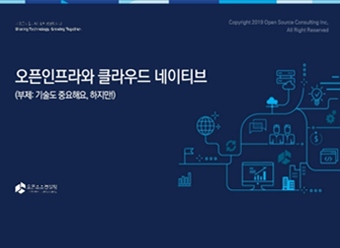

<!DOCTYPE html>
<html lang="ko">
	<head>
		<meta charset="UTF-8" />
		<meta name="viewport" content="width=device-width, initial-scale=1.0" />
		<meta http-equiv="X-UA-Compatible" content="ie=edge" />
		<meta name="format-detection" content="telephone=no" />
    <link href="https://cdn.rawgit.com/michalsnik/aos/2.1.1/dist/aos.css" rel="stylesheet">
		<link href="style/common.css" rel="stylesheet" type="text/css" />
		<link href="https://fonts.googleapis.com/css?family=Noto+Sans+KR&display=swap" rel="stylesheet" />
    <script type="text/javascript" src="https://ajax.googleapis.com/ajax/libs/jquery/1.7.2/jquery.min.js"></script>
    <script src="https://cdn.rawgit.com/michalsnik/aos/2.1.1/dist/aos.js"></script>
    <script type="text/javascript" src="js/SmoothScroll.min.js"></script>
		<script type="text/javascript" src="js/common.js"></script>
	</head>
	<body>
		<div>
			<div id="header">
				<div class="section-container">
					<div class="main-header">
						<a href="/">
							
						</a>
						<nav id="gnb">
							<h2 class="a11y">site navigation</h2>
							<ul class="gnb__list">
								<li class="gnb__item mg-r40">
									<a class="gnb__link" href="index.html">열린기술공방 소개</a>
									<ul class="sub-menu">
										<li class="sub-menu__item">
											<a class="sub-menu__link" href="index.html#intro">열린기술공방 소개</a>
										</li>
										<li class="sub-menu__item">
											<a class="sub-menu__link" href="index.html#philosophy">우리의 철학</a>
										</li>
										<li class="sub-menu__item">
											<a class="sub-menu__link" href="">우리의 서비스</a>
										</li>
										<li class="sub-menu__item"><a class="sub-menu__link" href="">문의하기</a></li>
									</ul>
								</li>
								<li class="gnb__item mg-r40">
									<a class="gnb__link" href="migration.html">마이그레이션</a>
									<ul class="sub-menu">
										<li class="sub-menu__item">
											<a class="sub-menu__link" href="migration.html#migration-service-intro">서비스 개요</a>
										</li>
										<li class="sub-menu__item">
											<a class="sub-menu__link" href="migration.html#migration-service-provide">제공 서비스</a>
										</li>
										<li class="sub-menu__item">
											<a class="sub-menu__link" href="migration.html#migration-methodology">Migration 방법론</a>
										</li>
										<li class="sub-menu__item"><a class="sub-menu__link" href="migration.html#migration-contact">문의하기</a></li>
									</ul>
								</li>
								<li class="gnb__item mg-r40 active">
									<a class="gnb__link" href="devopsMsa.html">DevOps . MSA</a>
									<ul class="sub-menu">
										<li class="sub-menu__item">
											<a class="sub-menu__link" href="devopsMsa.html#devops-service-intro">서비스 개요</a>
										</li>
										<li class="sub-menu__item">
											<a class="sub-menu__link" href="devopsMsa.html#devops-service-provide">제공 서비스</a>
										</li>
										<li class="sub-menu__item">
											<a class="sub-menu__link" href="devopsMsa.html#devops-achitecture">기술 아키텍쳐</a>
										</li>
										<li class="sub-menu__item"><a class="sub-menu__link" href="devopsMsa.html#devops-contact">문의하기</a></li>
									</ul>
								</li>
								<li class="gnb__item">
									<span class="gnb__link">문의하기</span>
									<ul class="sub-menu">
										<li class="sub-menu__item"><a class="sub-menu__link" href="">문의하기</a></li>
										<li class="sub-menu__item">
											<a class="sub-menu__link" href="">기술자료 다운로드</a>
										</li>
									</ul>
								</li>
							</ul>
						</nav>
						<button class="hamburger">
							<span class="a11y">site navigation open</span>
							<span></span>
						</button>
					</div>
				</div>
			</div>

			<!-- section -->
			<div id="devopsMsa" class="continer">
				<section class="section-1" >
					<!-- <ul class="sub-nav">
						<li class="sub-nav__item active"><a class="sub-nav__link" href="">서비스 개요</a></li>
						<li class="sub-nav__item"><a class="sub-nav__link" href="">제공 서비스</a></li>
					</ul> -->
					<div class="section-container">
						<span class="anchor" id="devops-service-intro"></span>
						<div class="small-purple-img-container">
							
						</div>
						<h1 class="title" data-aos="fade-up" data-aos-delay="100">
							기업의 민첩성을 올리는<span class="highlight-purple"> DevOps/MSA 환경 </span>구성
						</h1>
						<hr class="vertical-hr" />
						
						<h2 class="sub-title" data-aos="fade-up" data-aos-delay="100">DevOps . MSA 컨설팅</h2>
						<p>
							애플리케이션의 확장성과 가용성을 향상 시킬 수 있는 클라우드 네이티브로의 전환이 확산되면서
							DevOps/MSA에 대한 수요 또한 증가하고 있습니다. 열린기술공방은 마이그레이션 이후 애플리케이션
							워크로드를 클라우드에 최적화 시키는 방법을 가이드 합니다.
						</p>
						<p>
							열린기술공방은 기업의 현실적인 요구사항이 반영된 DevOps/MSA 문화를 전파합니다.
							열린기술공방의 전문 인력이 고객사의 실제 업무 요구사항을 파일럿 형태로 구현하여 DevOps/MSA로
							프로젝트를 진행하고, 담당자는 습득한 지식과 구축된 결과물을 가지고 돌아가 사내에 전파하게
							됩니다. 이를 통해 기업의 민첩성을 올리고, 소프트웨어 개발에 있어 보다 변화된 구축 문화를
							내부에 이식할 수 있습니다. 열린기술공방은 기업의 일하는 방식과 기술의 근본적인 변화를 목표로
							합니다.
						</p>
						<picture data-aos="fade-up" data-aos-delay="100">
							<source media="(max-width: 960px)" srcset="img/img_msa_gr_mo.png">
							
						</picture>
					</div>
				</section>
				<section class="section-2">
					<div class="section-container flex">
						<h1 class="title" data-aos="fade-up" data-aos-delay="100">DevOps/MSA<br />서비스 소개</h1>
						<div class="info-service-wrap">
							<div class="item">
								
								<h2 data-aos="fade-up" data-aos-delay="100">기술 내재화</h2>
								<div class="description">
									마이그레이션 방법론에 따른 체계적인 방법과 기술 내재화
								</div>
								
							</div>
							<div class="item">
								
								<h2 data-aos="fade-up" data-aos-delay="100">운영기술</h2>
								<div class="description">
									프라이빗/퍼블릭 클라우드 구현 및 전환, 운영기술
								</div>
								
							</div>
						</div>
					</div>
				</section>
				<section class="section-3" id="tab-01-contents">
					<div class="section-container">
						<span class="anchor" id="devops-service-provide"></span>
						<div class="num-img-container">
							
							
						</div>
						<h2 class="title" data-aos="fade-up" data-aos-delay="100">DevOps 실현을 위한 플랫폼 서비스</h2>
						<div class="flex service-step">
							<div>
								<p>
									열린기술공방은 오픈소스 기반의 라이브러리를 통해 손쉽게 연결하여 확장하고 각각의
									요소가 상호작용하면서 보다 큰 가치를 만드는 것을 목표로 삼고 있습니다.
								</p>
								<p>
									필요한 서비스나 컴포넌트를 우리의 리포지토리(또는 레지스트리)내에서 쉽게 찾고 서로
									상호작용을 통하여 발전시키며, 이를 통해 새로운 제품과 서비스를 만들 수 있습니다.
									플랫폼 서비스를 이루는 컴포넌트를 아래와 같습니다.
								</p>
								
							</div>
							<ul class="service-step-list">
								<li>
									자원의 효율성을 극대화하기 위한 오픈스택 플랫폼
								</li>
								<li>
									컨테이너 오케스트레이션을 통해 개발/스테이징/운영을 유기적으로관리하는 Kubernetes
								</li>
								<li>
									설치자동화, 관리 자동화, 운영 자동화를 위한 Ansible, Teraform
								</li>
								<li>
									애플리케이션 개발/형상관리/빌드/배포를 위한 Git/Jenkins/Sonarcube
								</li>
								<li>
									Python, Java, Node 라이브러리 관리를 위한 Nexus 리포지토리
								</li>
								<li>
									Atlassian 솔루션을 활용한 ALM (Application Lifecycle Management)와 확장된 DevOps
								</li>
								<li>
									Container 런타임으로 구성된 운영 시스템의 로그를 수집하여 분석하는 ELK
								</li>
								<li>
									상용 데이터센터 모니터링 도구를 대체하는 Zabbix와 부가 라이브러리
								</li>
								<li>
									기타 인프라 레이어부터 애플리케이션 레이어로 확장 가능한 라이브러리
								</li>
							</ul>
						</div>
						<div class="box-container">
							열린기술공방은 대규모의 거창한 시스템이 아닌 플랫폼을 만들기 위한 뼈대(Skeleton)를 만드는
							작업부터 시작합니다. 작은 조각들을 아교(Glue)로 접합하고 이를 큰 건축물로 만드는 방법으로
							방향을 바꾸어야 합니다. 열린기술공방은
							<span class="highlight-mint"
								>DevOps 실현을 위한 아키텍처, 컴포넌트 연결, 프로세스화의 방법</span
							>을 전달합니다.
						</div>
					</div>
				</section>
				<section class="section-4" id="tab-02-contents">
					<div class="section-container">
						<div class="num-img-container">
							
							
						</div>
						<h2 class="title" data-aos="fade-up" data-aos-delay="100">MSA 기반의 애플리케이션 개발</h2>
						<div class="flex service-step">
							<div>
								<p>
									제품 및 서비스 개발의 초점이 회사에서 사용자로 옮겨가기 시작하면서 기존의 요구사항을
									수집하고, 개발하고, 테스트하던 긴 호흡 방식이 더 이상 통하지 않게 되었습니다.
								</p>
								<p>
									태스크를 작게 나누고 그것을 빠르게 개발하며 개발자의 성취도를 높이고 시스템의
									결합도를 떨어뜨리는 Small change가 트렌드가 되어가고 있고, 애자일에 대한 요구가
									높아지고 있습니다.
								</p>
								<p>
									마이크로서비스 아키텍처는 모노리틱 아키텍처와는 다른 특징을 가지고 있습니다
								</p>
								
							</div>
							<ul class="service-step-list">
								<li>
									애플리케이션 로직을 각자 책임이 명확한 작은 컴포넌트들로 분해하고 이들을 조합해서
									솔루션을 제공
								</li>
								<li>
									각 컴포넌트는 작은 책임 영역을 담당하고 완전히 상호 독립적으로 배포,
									마이크로서비스는 비즈니스 영역의 한 부분에서만 책임을 담당. 그리고 여러
									애플리케이션에서 재사용 가능해야 함
								</li>
								<li>
									마이크로서비스는 몇 가지 기본 원칙에 기반을 두며, 서비스 소비자와 서비스 제공자
									사이의 데이터 교환을 위해 HTTP와 JSON 같은 경량 통신 프로토콜을 사용
								</li>
								<li>
									애플리케이션은 항상 기술 중립적 프로토콜을 사용해 통신하므로 서비스 구현 기술과는
									무관. 따라서 마이크로서비스 기반의 애플리케이션을 다양한 언어와 기술로 구축할 수
									있다는 것을 의미
								</li>
								<li>
									작고 독립적이며 분산된 마이크로서비스를 사용해 조직은 명확히 의된 책임 영역을
									담당하는 소규모 팀을 보유. 이 팀들은 애플리케이션 출시처럼 하나의 목표를 향해
									일하지만, 자기가 개발하는 서비스만 책임.
								</li>
							</ul>
						</div>
						<div class="box-container">
							마이크로서비스가 좋다고만은 할 수 없습니다. 하지만 단점보다는 클라우드 아키텍처 상의 장점이
							보다 효과적으로 증명되었기 때문에 이에 대한 기업들의 시도가 많아지고 있고, 이해를 하기 위한
							고객의 니즈가 증가하고 있습니다. 열린기술공방은
							<span class="highlight-mint"
								>보다 유연한 MSA기반의 애플리케이션을 만들고 조립하고 테스트하는 방법을 전달</span
							>합니다.
						</div>
					</div>
				</section>
				<section class="section-5">
					<div class="section-container">
						<span class="anchor" id="devops-achitecture"></span>
						<h1 class="title">
							기술 아키텍쳐
						</h1>
						<p>열린기술공방이 제안하는 기술 아키텍처</p>
						
					</div>
				</section>
				<section class="section-6">
          <div class="section-container">
            <h1 class="title">서비스 관련 기술자료 <span class="highlight-orange">다운로드</span></h1>
            <div class="flex">
              <div class="item mg-r34" data-aos="fade-up" data-aos-delay="100">
                
                <div class="item-description-container">
                  <h3 class="item-description-title">클라우드 네이티브 협업</h3>
                  <div class="description">
                    많은 기업들이 오픈 인프라와 클라우드<br />
                    네이티브 전략을 시도하고 있지만, 기술보다 <br />중요한건 의사소통과 협업/공유
                    문화입니다.
                  </div>
                </div>
              </div>
              <div class="item mg-r34" data-aos="fade-up" data-aos-delay="200">
                
                <div class="item-description-container">
                  <h3 class="item-description-title">애자일 & 스프린트</h3>
                  <div class="description">
                    Atlassian 본사의 솔루션 엔지니어인 'Scott'이<br />
                    전하는 신속하게 변하는 IT팀을 위한 인력,<br />
                    프로세스, 제품 전반에 걸친 Atlassian의<br />
                    전략을 확인해 보세요.
                  </div>
                </div>
              </div>
              <div class="item" data-aos="fade-up" data-aos-delay="300">
                
                <div class="item-description-container">
                  <h3 class="item-description-title">Atlasian, DevOps and ITSM</h3>
                  <div class="description">
                    오픈소스컨설팅이 개최한 Atlassian meets<br />
                    DevOps and ITSM 세미나 발표자료를<br />
                    공유합니다. Atlassian 제품을 실제로 도입한 <br />카카오의 활용 사례를 직접
                    확인해 보세요!
                  </div>
                </div>
              </div>
            </div>
          </div>
        </section>
				<section class="section-7" id="devops-contact">
					<div class="section-container">
						<div>
							<h1 class="title" data-aos="fade-up" data-aos-delay="100">
								Let’s start<br />
								with your project <span class="highlight-orange">together.</span>
							</h1>
							<div class="description">열린기술공방의 문은 언제든지 열려 있습니다.</div>
							<button class="orange-btn default-btn">문의하기</button>
						</div>
						<div>
							
						</div>
					</div>
				</section>
			</div>
			<!-- footer -->
			<footer>
				<div class="footer-contact">
					<div class="section-container">
						<div>
							<a href="https://ko-kr.facebook.com/osckorea/" target="_blank"></a>
							<a href="https://www.youtube.com/channel/UCVtTsqu_d8WNjDpUif2x4Mw" target="_blank"></a>
							<a href="https://github.com/OpenSourceConsulting" target="_blank"></a>
							<a href="https://www.slideshare.net/OpenSourceConsulting/presentations" target="_blank"></a>
						</div>
						<div>
							<button class="family-site-btn">Family Site</button>
						</div>
					</div>
				</div>
				<div class="footer-bottom">
					<div class="section-container flex">
						<div class="item">
							<div class="menu-title">Home</div>
							<ul class="menu-item">
								<li><a href="/#intro">열린기술공방소개</a></li>
								<li><a href="/#intro-philosophy">우리의 철학</a></li>
								<li><a href="/#intro-service">우리의 서비스</a></li>
								<li><a href="/#intro-contact">문의하기</a></li>
							</ul>
						</div>
						<div class="item">
							<div class="menu-title">Migration Service</div>
							<ul class="menu-item">
								<li><a href="migration.html#migration-service-intro">서비스 개요</a></li>
								<li><a href="migration.html#migration-service-provide">제공 서비스</a></li>
								<li><a href="migration.html#migration-methodology">Migration 방법론</a></li>
								<li><a href="migration.html#migration-contact">Contact us</a></li>
							</ul>
						</div>
						<div class="item">
							<div class="menu-title">DevOps/MSA Consulting</div>
							<ul class="menu-item">
								<li><a href="devopsMsa.html#devops-service-intro">서비스 개요</a></li>
								<li><a href="devopsMsa.html#devops-service-provide">제공 서비스</a></li>
								<li><a href="devopsMsa.html#devops-achitecture">기술 Architecture</a></li>
								<li><a href="devopsMsa.html#devops-contact">Contact us</a></li>
							</ul>
						</div>
						<div class="item">
							
							<div><span>문의처</span> +82 - 2-516-0711</div>
							<div>contact@sharingtechlabs.com</div>
						</div>
					</div>
				</div>
			</footer>
    </div>
    <script>
        AOS.init({
          duration: 600,
          offset: 0,
          delay: 100,
          easing: 'ease-out-quad',
        });
    </script>
	</body>
</html>
